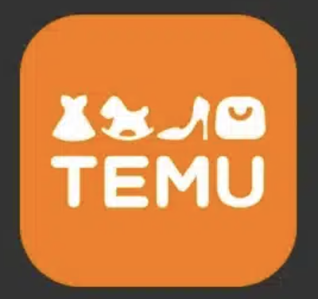
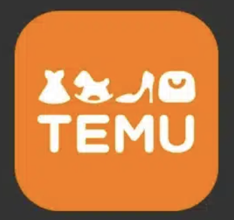

Data-Driven Organization
2025-03-12
Data-Driven Organization
 

https://www.iplandigital.co.th/ecommerce/temu-ecommerce-success-secrets/


Marketing Analysis
Pricing
Demand/Supply Analysis and Sales Forecasting
Churn Prediction
Loyalty Analysis
Social Listening
HR Analytics
Process Optimization
Recommendation System
Data-Driven Organization


ใช้ข้อมูลย้อนหลัง 10 ปีเพื่อสร้างตัวชี้วัดกว่า 800 ตัวสำหรับระบุความเสี่ยงของนักศึกษา
อัปเดตข้อมูลทุกคืนและแจ้งเตือนที่ปรึกษาเมื่อพบว่านักศึกษาอาจมีปัญหา
ส่งผลให้เกิดการแทรกแซงจากที่ปรึกษามากกว่า 200,000 ครั้ง
อัตราการสำเร็จการศึกษาเพิ่มขึ้น 67% ในช่วงหกปีที่ผ่านมา
ช่องว่างความสำเร็จระหว่างกลุ่มเสี่ยง (เช่น นักศึกษาผิวดำ ฮิสแปนิก และรายได้น้อย) กับนักศึกษาโดยรวมถูกขจัดออกไป
GSU กลายเป็นมหาวิทยาลัยที่มอบปริญญาตรีให้กับนักศึกษาผิวดำมากที่สุดในสหรัฐฯ
Data-Driven Organization


องค์ประกอบของ Data-Driven Organization

üéØ Transforming to Data-Driven Organization
วางโครงสร้าง Data Management & Governance → ทำให้ข้อมูลมีมาตรฐาน
สร้าง Data Culture ในองค์กร → ให้พนักงานมีทักษะและความเชื่อมั่นในการใช้ข้อมูล
เริ่มใช้ Data-Driven Decision Making → นำข้อมูลมาใช้ตัดสินใจจริง
นำเทคโนโลยีมาสนับสนุน → ทำให้การใช้ข้อมูลมีประสิทธิภาพสูงสุด

Data Governance & Management
Data is an enterprise asset that needs to be managed as thoughtfully as money or employees

Ot (2023)
Data Life Cycle
Data Life Cycle คือ กระบวนการจัดการข้อมูล ตั้งแต่ข้อมูลถูกสร้างขึ้น จัดเก็บ นำไปใช้ แชร์ เก็บรักษา และสุดท้ายทำลายเมื่อหมดอายุการใช้งาน

Data Quality

https://www.dqlabs.ai/blog/what-is-data-quality-management/
Data Literacy


Data Analytics

Data Analytics

ปัจจัยที่สำคัญที่สนับสนุนความสำเร็จ
ทีมงานที่มีความเชี่ยวชาญ
Data Engineer
Business Analyst
Data Scientist
Data Analyst
Data Visualization Specialist
ข้อมูลมีการบริหารจัดการที่ดี
มีโจทย์ความต้องการที่ชัดเจน
มีระบบ/เทคโนโลยีที่เหมาะสม
มีการสนับสนุนจากผู้บริหาร
References